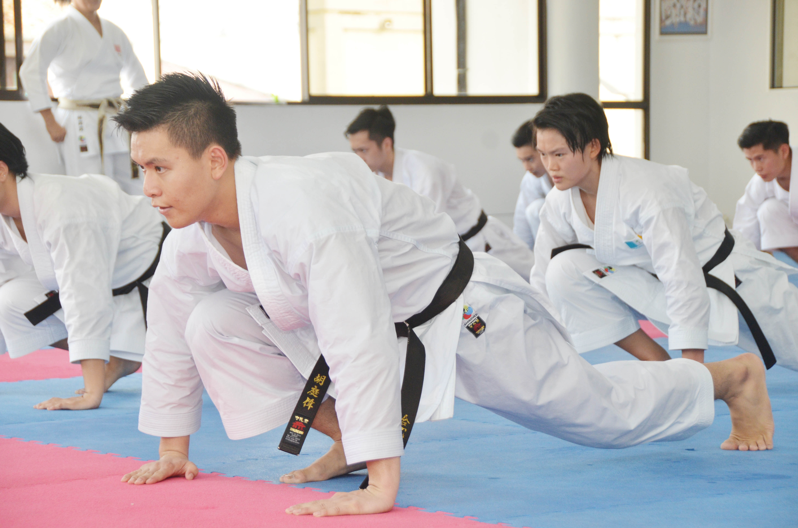

Home
Visuals
Extra
Hidden riddles here
Savour the beauty
Kyudo hakama
To the top
Aikido hakama
To the top
Karate gi

To the top
Traditional men's kimonos
To the top
Traditional women's kimonos
To the top
Modern street-fashion kimonos
To further surf Japanese kimono Harajuku fashion >
Enjoy :)
To the top